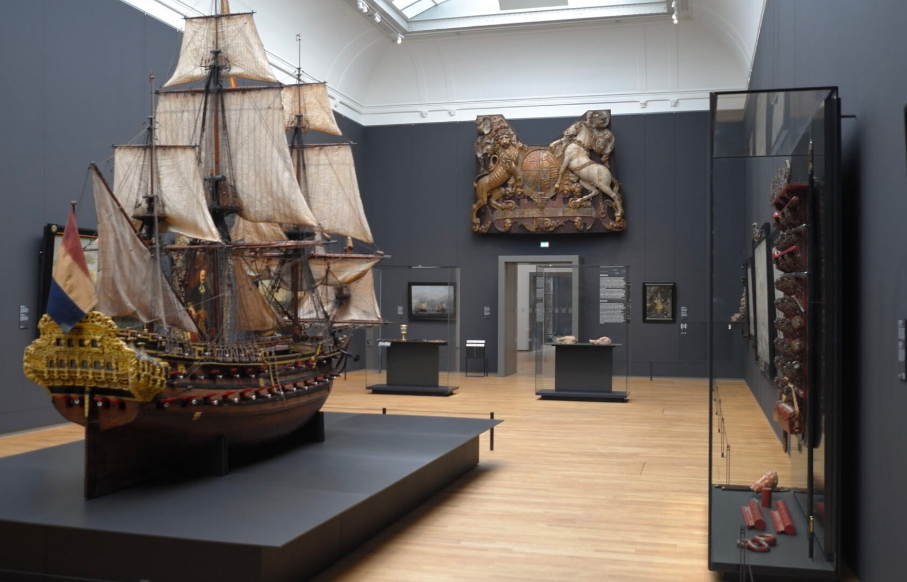
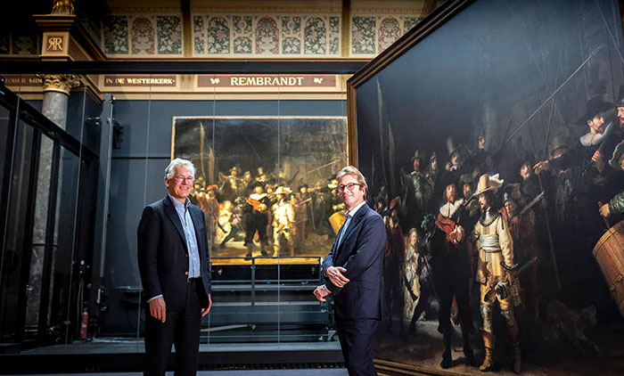
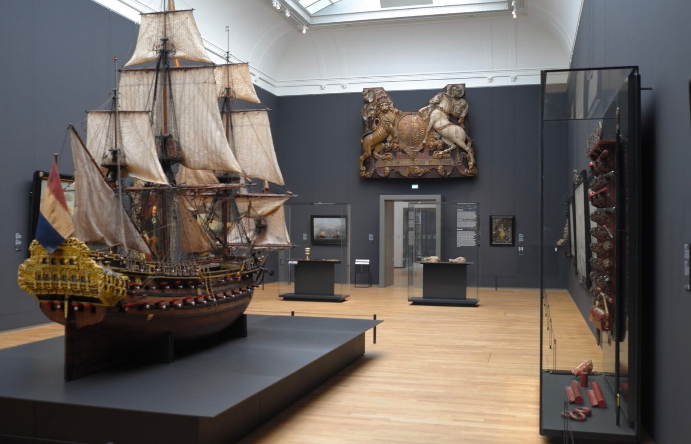
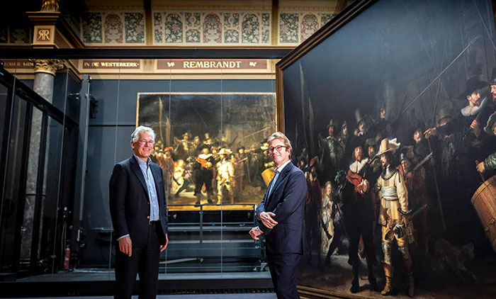

On 19 November 1798 the government decided to establish a national museum on the French model. Intended as a ‘prestige project’ to inspire patriotic feeling, it would also offer a place to store important objects. This National Art Gallery first opened its doors on 31 May 1800 in Huis Ten Bosch in The Hague. It brought together more than 200 paintings and historical objects from both the stadtholders’ collections and national institutions (some defunct) like the Dutch East India Company. The first purchase – The Swan by Jan Asselijn – cost 100 guilders and is one of the Rijksmuseum’s top attractions to this day.

5 months ago The first and only museum I have loved so far. The art, views and architecture was fantastic. 🤩 The museum is located at the Museumplein in Amsterdam Zuid district, close to the Van Gogh Museum the Stedelijk Museum Amsterdam, and the Concertgebouw. In other words, you can go on a museum hunt in the neighbourhood ☺️
3 weeks ago Loved the Rembrandt exhibition, I recommend downloading the museum app and bringing headphones. Most of the centre pieces have a clear and short explanation/observation. The museum also has a coat and bag check so you can walk through the exhibits lightly.
3 weeks ago NEW It is so new and elegant after it’s renovation. Not having crowds because of safe distancing is a huge plus. The staff are so helpful and cheery. The museum app is a must!

open every day from 9am to 5pm
Museumstraat 1, 1071 XX Amsterdam
Heb je een vraag over het museum, onze collecties, je bezoek of bijvoorbeeld het doen van onderzoek? Neem dan gerust contact met ons op, we helpen je graag.
Rijksmuseum Amsterdam Postbus 74888 1070 DN Amsterdam
E-mail: info@rijksmuseum.nl Telefoonnummer: +31 (0) 20 6747 000


 


